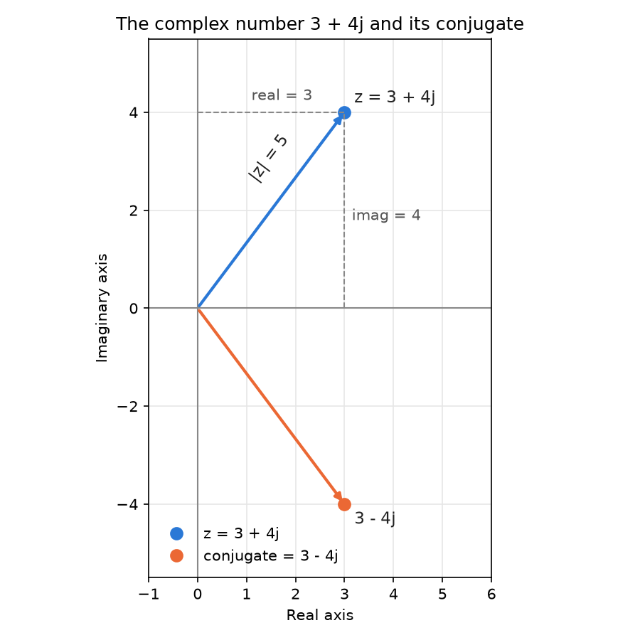

Complex Numbers in Python (complex): A Beginner's Guide with Examples¶
Most numbers we use every day sit on a single line: 3, -2.5, 100. A complex number is different. It has two parts, a real part and an imaginary part, so it needs two values to describe it. Complex numbers sound difficult, but Python makes them easy. They are built into the language, so you do not need to install or import anything to use them.
This page is part of the online material for Chapter 2: Python Data Types. Python has three built-in number types: int (whole numbers), float (numbers with a decimal point) and complex. This page covers the third one. It has three parts:
- Part A: Beginner's Guide. What a complex number is, why it is useful, how to create one, its useful properties and the basic operations, with worked examples by hand.
- Part B: Examples. Short scripts that show complex numbers in action, each with its output, and one combined script at the end.
- Part C: Check Your Understanding. Practice questions with step-by-step answers.
You do not need much mathematics to follow this page. If you know how to multiply out brackets, such as (a + b)(c + d), you have all the maths you need. Companion pages cover integers and floats.
Table of Contents¶
- Complex Numbers in Python (
complex): A Beginner's Guide with Examples - Key Terms Used on This Page
- Part A: Beginners Guide to Complex Numbers in Python
- Part B: Simple Guide to Complex Numbers in Python (Examples)
- Part C: Check Your Understanding
Key Terms Used on This Page¶
| Term | Simple meaning | Learn more |
|---|---|---|
| Complex number | A number with two parts, written as a + bj, where a is the real part and b is the imaginary part. |
Complex number |
| Real part | The ordinary number part, a in a + bj. |
Complex number |
| Imaginary part | The number that multiplies j, b in a + bj. |
Complex number |
Imaginary unit (j) |
A special number whose square is -1. So j is √-1. Mathematicians usually call it i; Python calls it j. |
Imaginary unit |
| Conjugate | The same complex number with the sign of the imaginary part flipped. The conjugate of 3 + 4j is 3 - 4j. |
Complex conjugate |
| Magnitude (modulus) | The distance of a complex number from zero. abs() gives it. |
Absolute value of a complex number |
| Complex plane | A graph where the real part is measured across and the imaginary part is measured up and down. | Complex plane |
| Polar form | Describing a complex number by its magnitude and its angle, instead of its two parts. | Polar form |
| Radian | A unit for measuring angles. A full turn is 2π radians, or 360 degrees. | Radian |
| Literal | A value typed directly into your code, such as 3 + 4j. |
Imaginary literals |
cmath |
Python's built-in module of maths functions for complex numbers. | cmath module |
TypeError |
The error Python raises when an operation cannot be used with a type of value. | TypeError |
Part A: Beginners Guide to Complex Numbers in Python¶
Complex numbers let us work with quantities that have two parts:
- a real part,
- an imaginary part (using j for √-1 in Python).
Example:
z = 3 + 4j
Here 3 is the real part and 4 is the imaginary part.
1. What Is a Complex Number?¶
No ordinary number, when multiplied by itself, gives a negative answer. 2 × 2 = 4 and (-2) × (-2) = 4. So the equation x² = -1 has no ordinary answer. Mathematicians solved this by inventing a new number whose square is -1. Python calls this number j:
j × j = -1, so j = √-1
A complex number combines an ordinary (real) number with a multiple of j:
z = a + bj
│ └── imaginary part (b), multiplied by j
└─────── real part (a)
Why j and not i? In mathematics books the imaginary unit is usually written i. Electrical engineers use j instead, because i already stands for electric current. Python follows the engineers' custom.
A picture helps. You can think of a complex number as a point on a graph called the complex plane. The real part is the distance across, and the imaginary part is the distance up (or down, if it is negative). The picture below shows 3 + 4j and its conjugate 3 - 4j.

The picture was drawn with the script below. It uses the Matplotlib library, which you can install with pip install matplotlib. Running it saves the file complex-plane-3-4j.png in the current folder.
import matplotlib
matplotlib.use("Agg") # draw to a file, not to a window
import matplotlib.pyplot as plt
# Step 1: The complex number and its conjugate
z = 3 + 4j
zc = z.conjugate() # 3 - 4j
# Step 2: Set up the drawing area
fig, ax = plt.subplots(figsize=(6, 6))
ax.axhline(0, color="#888888", linewidth=1) # real axis
ax.axvline(0, color="#888888", linewidth=1) # imaginary axis
ax.grid(color="#e6e6e6", linewidth=0.8)
ax.set_xlim(-1, 6)
ax.set_ylim(-5.5, 5.5)
ax.set_aspect("equal")
# Step 3: Draw an arrow from 0 to z; its length is abs(z)
ax.annotate("", xy=(z.real, z.imag), xytext=(0, 0),
arrowprops=dict(arrowstyle="-|>", color="#2a78d6", linewidth=2))
ax.plot(z.real, z.imag, "o", color="#2a78d6", markersize=8, label="z = 3 + 4j")
ax.text(z.real + 0.2, z.imag + 0.2, "z = 3 + 4j", color="#222222", fontsize=11)
ax.text(1.0, 2.6, "|z| = 5", color="#222222", fontsize=11, rotation=53)
# Step 4: Dashed guide lines show the real part (3) and imaginary part (4)
ax.plot([z.real, z.real], [0, z.imag], "--", color="#888888", linewidth=1)
ax.plot([0, z.real], [z.imag, z.imag], "--", color="#888888", linewidth=1)
ax.text(z.real + 0.15, 1.8, "imag = 4", color="#555555", fontsize=10)
ax.text(1.1, z.imag + 0.25, "real = 3", color="#555555", fontsize=10)
# Step 5: Draw the conjugate, which is the mirror image of z in the real axis
ax.annotate("", xy=(zc.real, zc.imag), xytext=(0, 0),
arrowprops=dict(arrowstyle="-|>", color="#eb6834", linewidth=2))
ax.plot(zc.real, zc.imag, "o", color="#eb6834", markersize=8, label="conjugate = 3 - 4j")
ax.text(zc.real + 0.2, zc.imag - 0.4, "3 - 4j", color="#222222", fontsize=11)
# Step 6: Labels, legend and saving the picture
ax.set_xlabel("Real axis")
ax.set_ylabel("Imaginary axis")
ax.set_title("The complex number 3 + 4j and its conjugate")
ax.legend(loc="lower left", frameon=False)
fig.tight_layout()
fig.savefig("complex-plane-3-4j.png", dpi=150, facecolor="white")
print("Saved complex-plane-3-4j.png")
Output:
Saved complex-plane-3-4j.png
2. Why Complex Numbers?¶
They are used in:
| Field | How complex numbers help |
|---|---|
| Electricity | Alternating current (AC) rises and falls like a wave. One complex number can hold both the size of a voltage or current and its timing (phase). |
| Engineering | Control systems, vibrations and bridges are studied with complex numbers to find out whether a system is stable. |
| Signal processing | Sound, music, radio and images are broken into waves using the Fourier transform, which works with complex numbers. |
| Physics | Waves, light and quantum mechanics are all described with complex numbers. |
| Computer graphics | Multiplying by a complex number turns (rotates) a point, which is handy in 2D graphics. Fractal pictures such as the Mandelbrot set are made from complex numbers. |
| Mathematics | Equations such as x² + 2x + 5 = 0, which have no ordinary answer, have complex answers (see Question 6 in Part C). |
3. How to Create Them¶
z = 3 + 4j
w = complex(5, 2) # same as 5 + 2j
There are two main ways:
- Write it directly (a literal):
3 + 4j. Thejmust come straight after a number, with no space and no*. Write1jforjon its own, because a barejis just a variable name. - Use the
complex()function:complex(real, imag). If you leave out the second value, the imaginary part is 0. You can also pass a string such as"3+4j", but it must not contain spaces around the+.
# Step 1: Write a complex number directly (a literal)
z = 3 + 4j
print("z ->", z)
# (3+4j)
# Step 2: Build one with the complex() function
w = complex(5, 2) # same as 5 + 2j
print("w ->", w)
# (5+2j)
# Step 3: Check the type
print("type(z) ->", type(z))
# <class 'complex'>
# Step 4: Other ways to create complex numbers
print("4j ->", 4j) # only an imaginary part
# 4j
print("1j * 1j ->", 1j * 1j) # j squared is -1
# (-1+0j)
print("complex(6) ->", complex(6)) # only a real part
# (6+0j)
print("complex('3+4j') ->", complex('3+4j')) # from a string (no spaces allowed)
# (3+4j)
Output:
z -> (3+4j)
w -> (5+2j)
type(z) -> <class 'complex'>
4j -> 4j
1j * 1j -> (-1+0j)
complex(6) -> (6+0j)
complex('3+4j') -> (3+4j)
Notice how Python prints complex numbers. When there is a real part, it puts the number in brackets, such as (3+4j). When the real part is exactly 0, it leaves out the brackets and the zero, such as 4j.
4. Useful Properties¶
z.real # real part
z.imag # imaginary part
z.conjugate()
abs(z) # magnitude
| Property or function | What it gives | Result for z = 3 + 4j |
|---|---|---|
z.real |
The real part, always a float | 3.0 |
z.imag |
The imaginary part, always a float | 4.0 |
z.conjugate() |
The conjugate: the imaginary part with its sign flipped | (3-4j) |
abs(z) |
The magnitude: the distance from 0 on the complex plane | 5.0 |
Note that real and imag are written without brackets (they are attributes, or stored values), while conjugate() needs brackets (it is a method, which does some work). Writing z.conjugate without brackets does not give the conjugate.
# Step 1: Create a complex number
z = 3 + 4j
# Step 2: Read its two parts
print("z.real ->", z.real)
# 3.0
print("z.imag ->", z.imag)
# 4.0
# Step 3: Get the conjugate (the sign of the imaginary part is flipped)
print("z.conjugate() ->", z.conjugate())
# (3-4j)
# Step 4: Get the magnitude (distance from zero)
print("abs(z) ->", abs(z))
# 5.0
# Step 5: Check the magnitude by hand, using Pythagoras
print("(3**2 + 4**2) ** 0.5 ->", (3**2 + 4**2) ** 0.5)
# 5.0
Output:
z.real -> 3.0
z.imag -> 4.0
z.conjugate() -> (3-4j)
abs(z) -> 5.0
(3**2 + 4**2) ** 0.5 -> 5.0
4.1 How the Magnitude Is Worked Out¶
Look at the picture in section 1. The real part (3), the imaginary part (4) and the arrow from 0 to z form a right-angled triangle. The magnitude is the length of the arrow, so we can find it with Pythagoras' theorem:
- Square the real part: 3² = 9.
- Square the imaginary part: 4² = 16.
- Add them: 9 + 16 = 25.
- Take the square root: √25 = 5.
So abs(3 + 4j) is 5.0. The general rule is abs(a + bj) = √(a² + b²). The magnitude is always a float and never negative.
5. Basic Operations¶
z + w
z - w
z * w
z / w
| Operation | Rule for (a + bj) and (c + dj) |
Example with z = 3 + 4j, w = 5 + 2j |
|---|---|---|
| Add | (a + c) + (b + d)j |
(8+6j) |
| Subtract | (a - c) + (b - d)j |
(-2+2j) |
| Multiply | (ac - bd) + (ad + bc)j |
(7+26j) |
| Divide | ((ac + bd) + (bc - ad)j) / (c² + d²) |
(0.793103448275862+0.48275862068965514j) |
You do not need to remember these rules. Python applies them for you. The next two sections show where they come from.
# Step 1: Two complex numbers
z = 3 + 4j
w = 5 + 2j
# Step 2: The four basic operations
print("z + w ->", z + w)
# (8+6j)
print("z - w ->", z - w)
# (-2+2j)
print("z * w ->", z * w)
# (7+26j)
print("z / w ->", z / w)
# (0.793103448275862+0.48275862068965514j)
# Step 3: Powers work too
print("z ** 2 ->", z ** 2)
# (-7+24j)
# Step 4: Mixing with int and float gives a complex result
print("z + 2 ->", z + 2)
# (5+4j)
print("z * 0.5 ->", z * 0.5)
# (1.5+2j)
# Step 5: Multiplying by 1j turns the number a quarter turn (90 degrees)
print("z * 1j ->", z * 1j)
# (-4+3j)
Output:
z + w -> (8+6j)
z - w -> (-2+2j)
z * w -> (7+26j)
z / w -> (0.793103448275862+0.48275862068965514j)
z ** 2 -> (-7+24j)
z + 2 -> (5+4j)
z * 0.5 -> (1.5+2j)
z * 1j -> (-4+3j)
When you mix a complex number with an int or a float, the result is always complex. Python follows the order int → float → complex (see type promotion on the integers page).
5.1 How Multiplication Works by Hand¶
Multiply out the brackets as usual, then replace j × j by -1. For z * w = (3 + 4j)(5 + 2j):
- First × first: 3 × 5 = 15.
- First × second: 3 × 2j = 6j.
- Second × first: 4j × 5 = 20j.
- Second × second: 4j × 2j = 8j² = 8 × (-1) = -8.
- Add the real parts: 15 - 8 = 7.
- Add the imaginary parts: 6j + 20j = 26j.
- Answer: 7 + 26j, which matches Python's
(7+26j).
flowchart TD
A["1. Start: (a + bj) x (c + dj)"] --> B["2. Multiply out the brackets: ac + adj + bcj + bdj squared"]
B --> C["3. Replace j squared by -1: bdj squared becomes -bd"]
C --> D["4. Collect the real parts: ac - bd"]
D --> E["5. Collect the imaginary parts: ad + bc"]
E --> F["6. Answer: (ac - bd) + (ad + bc)j"]
5.2 How Division Works by Hand¶
We cannot divide by a complex number directly. The trick is to multiply the top and the bottom by the conjugate of the bottom number. This turns the bottom into an ordinary real number. For z / w = (3 + 4j) / (5 + 2j):
- The conjugate of the bottom,
5 + 2j, is5 - 2j. - Top: (3 + 4j)(5 - 2j) = 15 - 6j + 20j - 8j² = 15 + 14j + 8 = 23 + 14j.
- Bottom: (5 + 2j)(5 - 2j) = 25 - 4j² = 25 + 4 = 29. The
jhas gone. - Divide each part by 29: 23/29 = 0.7931... and 14/29 = 0.4827...
- Answer: about 0.793 + 0.483j, which matches Python's result.
flowchart TD
A["1. Start: top divided by bottom"] --> B["2. Find the conjugate of the bottom number"]
B --> C["3. Multiply the top by the conjugate"]
B --> D["4. Multiply the bottom by the conjugate"]
D --> E["5. The bottom becomes a real number: c squared + d squared"]
C --> F["6. Divide the real and imaginary parts of the top by that number"]
E --> F
F --> G["7. Answer as a complex number"]
Steps 3 and 4 can be done in either order. They meet again at step 6.
5.3 Multiplying by j Turns a Number¶
The last line of the script shows a neat fact. (3 + 4j) * 1j gives (-4+3j). On the complex plane, multiplying by 1j turns a point a quarter turn (90 degrees) anticlockwise around 0, without changing its distance from 0. This is why complex numbers are handy for rotations in graphics and engineering.
6. Example¶
z = 3 + 4j
print(z.real) # 3.0
print(z.imag) # 4.0
print(abs(z)) # 5.0
Output:
3.0
4.0
5.0
Even though we typed the whole numbers 3 and 4, real and imag are always floats. That is why the output shows 3.0 and 4.0.
7. Summary¶
Complex numbers are simple in Python, built into the language, and very useful for engineering and science.
- A complex number has a real part and an imaginary part:
a + bj, wherejis √-1. - Create one with a literal such as
3 + 4jor withcomplex(3, 4). z.real,z.imag,z.conjugate()andabs(z)give its parts, conjugate and magnitude.+,-,*,/and**all work. Python applies the rules for you.- Mixing a complex number with an
intorfloatgives a complex result.
Part B: Simple Guide to Complex Numbers in Python (Examples)¶
Each block below is a short script. The expected output is shown in a hash comment (#) just below each print() line, and the complete output is given after the script. Every block runs on its own, so you can copy and paste any of them into Python. A combined script with all the blocks is given at the end.
1. Creating Complex Numbers¶
# Step 1: A number with only an imaginary part
print("5j ->", 5j)
# 5j
# Step 2: A number with both parts
print("3 + 7j ->", 3 + 7j)
# (3+7j)
# Step 3: complex(real, imag)
print("complex(10, -4) ->", complex(10, -4))
# (10-4j)
# Step 4: complex() with only a real part
print("complex(6) ->", complex(6))
# (6+0j)
Output:
5j -> 5j
3 + 7j -> (3+7j)
complex(10, -4) -> (10-4j)
complex(6) -> (6+0j)
2. Accessing Parts¶
# Step 1: Create the number
z = complex(10, -4)
print("z ->", z)
# (10-4j)
# Step 2: The real part (always a float)
print("z.real ->", z.real)
# 10.0
# Step 3: The imaginary part (always a float)
print("z.imag ->", z.imag)
# -4.0
# Step 4: The conjugate (the imaginary part changes sign)
print("z.conjugate() ->", z.conjugate())
# (10+4j)
Output:
z -> (10-4j)
z.real -> 10.0
z.imag -> -4.0
z.conjugate() -> (10+4j)
3. Magnitude and Power¶
z = complex(10, -4) # defined again so this block runs on its own
# Step 1: Magnitude = square root of (real² + imag²) = square root of 116
print("abs(z) ->", abs(z))
# 10.770329614269007
# Step 2: Square the number
print("pow(z, 2) ->", pow(z, 2))
# (84-80j)
# (10 - 4j)² = 100 - 80j + 16j² = 100 - 80j - 16 = 84 - 80j
Output:
abs(z) -> 10.770329614269007
pow(z, 2) -> (84-80j)
How the magnitude is worked out:
- Square the real part: 10² = 100.
- Square the imaginary part: (-4)² = 16.
- Add them: 100 + 16 = 116.
- Take the square root: √116 = 10.770329614269007.
4. Arithmetic¶
# Step 1: Two complex numbers
z1 = complex(10, -4)
z2 = complex(-3, 2)
# Step 2: Add and subtract (work on each part separately)
print("z1 + z2 ->", z1 + z2)
# (7-2j)
print("z1 - z2 ->", z1 - z2)
# (13-6j)
# Step 3: Multiply
print("z1 * z2 ->", z1 * z2)
# (-22+32j)
# Step 4: Divide
print("z1 / z2 ->", z1 / z2)
# (-2.9230769230769234-0.6153846153846153j)
Output:
z1 + z2 -> (7-2j)
z1 - z2 -> (13-6j)
z1 * z2 -> (-22+32j)
z1 / z2 -> (-2.9230769230769234-0.6153846153846153j)
Working by hand, as in Part A:
| Operation | Working | Result |
|---|---|---|
z1 + z2 |
(10 + (-3)) + ((-4) + 2)j | 7 - 2j |
z1 - z2 |
(10 - (-3)) + ((-4) - 2)j | 13 - 6j |
z1 * z2 |
(10)(-3) + (10)(2j) + (-4j)(-3) + (-4j)(2j) = -30 + 20j + 12j + 8 | -22 + 32j |
z1 / z2 |
Multiply top and bottom by -3 - 2j. Top: -30 - 20j + 12j - 8 = -38 - 8j. Bottom: 9 + 4 = 13. So -38/13 - (8/13)j | -2.923... - 0.615...j |
5. Unsupported Operations (Error Examples)¶
Some operations make no sense for complex numbers, so Python raises a TypeError:
- Floor division
//, remainder%anddivmod()need rounding down to a whole number. There is no single "down" direction on a flat plane, so they are not defined. <,>,<=and>=need one number to be bigger than the other. Complex numbers are points on a plane, not on a line, so there is no natural order. Is1jbigger or smaller than1? Neither.==and!=work, because two complex numbers are equal when both parts are equal.
z1 = complex(10, -4) # defined again so this block runs on its own
z2 = complex(-3, 2) # defined again so this block runs on its own
# Step 1: These operations are not allowed for complex numbers
# print(z1 // z2) # TypeError
# print(z1 % z2) # TypeError
# print(divmod(z1, z2)) # TypeError
# print(z1 > z2) # TypeError
# print(z1 < z2) # TypeError
# Step 2: Run each one safely and show the error
tests = [
("z1 // z2", lambda: z1 // z2),
("z1 % z2", lambda: z1 % z2),
("divmod(z1, z2)", lambda: divmod(z1, z2)),
("z1 > z2", lambda: z1 > z2),
("z1 < z2", lambda: z1 < z2),
]
for text, attempt in tests:
try:
attempt()
except TypeError:
print(text, "-> TypeError")
# Step 3: Testing for equality is allowed
print("z1 == z2 ->", z1 == z2)
# False
print("z1 != z2 ->", z1 != z2)
# True
# Step 4: To compare sizes, compare the magnitudes instead
print("abs(z1) > abs(z2) ->", abs(z1) > abs(z2))
# True
Output:
z1 // z2 -> TypeError
z1 % z2 -> TypeError
divmod(z1, z2) -> TypeError
z1 > z2 -> TypeError
z1 < z2 -> TypeError
z1 == z2 -> False
z1 != z2 -> True
abs(z1) > abs(z2) -> True
If you need to know which of two complex numbers is "bigger", decide what you mean. Usually it is the distance from 0, so compare abs() values, as in Step 4.
flowchart TD
A["1. You apply an operation to complex numbers"] --> B{"2. Which operation?"}
B -->|Arithmetic| C["3. Add, subtract, multiply, divide, power: allowed, gives a complex number"]
B -->|Equality| D["4. Equal or not equal: allowed, gives True or False"]
B -->|Rounding down| E["5. Floor division, remainder, divmod: TypeError"]
B -->|Ordering| F["6. Less than or greater than: TypeError, no natural order"]
F --> G["7. To compare sizes, compare abs(z1) and abs(z2)"]
6. Large Complex Numbers¶
import sys
# Step 1: A complex number with large parts
large = complex(5e12, -8e12)
# Step 2: Its size in memory
print("sys.getsizeof(large) ->", sys.getsizeof(large))
# 32
# Every complex number takes 32 bytes on 64-bit CPython, whatever its value.
# Step 3: Arithmetic with large values
print("large + large ->", large + large)
# (10000000000000-16000000000000j)
# That is 1e13 - 1.6e13j. Python writes out the digits because each part
# has fewer than 17 digits.
print("large - large ->", large - large)
# 0j
print("large * large ->", large * large)
# (-3.9e+25-8e+25j)
print("large / large ->", large / large)
# (1-0j)
# The imaginary part is -0.0 (negative zero), so Python shows "-0j".
# It is equal to (1+0j).
Output:
sys.getsizeof(large) -> 32
large + large -> (10000000000000-16000000000000j)
large - large -> 0j
large * large -> (-3.9e+25-8e+25j)
large / large -> (1-0j)
Points to note:
- A complex number is stored as two floats, one for each part. So every complex number takes the same 32 bytes, whatever its value. Unlike an
int, it does not grow. - Because the parts are floats, complex numbers share the limits of floats: about 15 to 17 significant digits, and a largest value of about 1.8 × 10³⁰⁸ for each part. See the floats page for details.
7. The cmath Module (Advanced)¶
The math module works only with real numbers. For complex numbers, Python has the cmath module. It has complex versions of sqrt(), exp(), log(), sin() and so on, plus functions for polar form. In polar form, a complex number is described by its magnitude (distance from 0) and its angle (measured anticlockwise from the positive real axis, in radians).
import cmath
import math
# Step 1: math.sqrt() cannot take the square root of a negative number
try:
math.sqrt(-1)
except ValueError as error:
print("math.sqrt(-1) -> ValueError:", error)
# Step 2: cmath.sqrt() can, and gives a complex answer
print("cmath.sqrt(-1) ->", cmath.sqrt(-1))
# 1j
print("cmath.sqrt(-16) ->", cmath.sqrt(-16))
# 4j
# Step 3: Polar form - magnitude and angle
z = 3 + 4j
r, theta = cmath.polar(z)
print("cmath.polar(z) ->", (r, theta))
# (5.0, 0.9272952180016122)
print("angle in degrees ->", math.degrees(theta))
# 53.13010235415598
# Step 4: Back from polar form to the usual form
print("cmath.rect(r, theta) ->", cmath.rect(r, theta))
# (3.0000000000000004+3.9999999999999996j)
# The tiny errors come from float rounding (see the float page).
Output:
math.sqrt(-1) -> ValueError: math domain error
cmath.sqrt(-1) -> 1j
cmath.sqrt(-16) -> 4j
cmath.polar(z) -> (5.0, 0.9272952180016122)
angle in degrees -> 53.13010235415598
cmath.rect(r, theta) -> (3.0000000000000004+3.9999999999999996j)
For 3 + 4j, the magnitude is 5 and the angle is about 0.927 radians, or about 53.13 degrees. You can see this angle in the picture in section 1 of Part A.
8. All the Examples in One Script¶
This script joins blocks 1 to 7 into a single program. Lines that repeated a variable only so that a block could run on its own have been left out, and the imports are placed at the top.
import cmath
import math
import sys
# ===== Part 1. Creating complex numbers =====
# Step 1: A number with only an imaginary part
print("5j ->", 5j)
# 5j
# Step 2: A number with both parts
print("3 + 7j ->", 3 + 7j)
# (3+7j)
# Step 3: complex(real, imag)
print("complex(10, -4) ->", complex(10, -4))
# (10-4j)
# Step 4: complex() with only a real part
print("complex(6) ->", complex(6))
# (6+0j)
# ===== Part 2. Accessing parts =====
# Step 1: Create the number
z = complex(10, -4)
print("z ->", z)
# (10-4j)
# Step 2: The real part (always a float)
print("z.real ->", z.real)
# 10.0
# Step 3: The imaginary part (always a float)
print("z.imag ->", z.imag)
# -4.0
# Step 4: The conjugate (the imaginary part changes sign)
print("z.conjugate() ->", z.conjugate())
# (10+4j)
# ===== Part 3. Magnitude and power =====
# Step 1: Magnitude = square root of (real² + imag²) = square root of 116
print("abs(z) ->", abs(z))
# 10.770329614269007
# Step 2: Square the number
print("pow(z, 2) ->", pow(z, 2))
# (84-80j)
# (10 - 4j)² = 100 - 80j + 16j² = 100 - 80j - 16 = 84 - 80j
# ===== Part 4. Arithmetic =====
# Step 1: Two complex numbers
z1 = complex(10, -4)
z2 = complex(-3, 2)
# Step 2: Add and subtract (work on each part separately)
print("z1 + z2 ->", z1 + z2)
# (7-2j)
print("z1 - z2 ->", z1 - z2)
# (13-6j)
# Step 3: Multiply
print("z1 * z2 ->", z1 * z2)
# (-22+32j)
# Step 4: Divide
print("z1 / z2 ->", z1 / z2)
# (-2.9230769230769234-0.6153846153846153j)
# ===== Part 5. Unsupported operations =====
# Step 1: These operations are not allowed for complex numbers
# print(z1 // z2) # TypeError
# print(z1 % z2) # TypeError
# print(divmod(z1, z2)) # TypeError
# print(z1 > z2) # TypeError
# print(z1 < z2) # TypeError
# Step 2: Run each one safely and show the error
tests = [
("z1 // z2", lambda: z1 // z2),
("z1 % z2", lambda: z1 % z2),
("divmod(z1, z2)", lambda: divmod(z1, z2)),
("z1 > z2", lambda: z1 > z2),
("z1 < z2", lambda: z1 < z2),
]
for text, attempt in tests:
try:
attempt()
except TypeError:
print(text, "-> TypeError")
# Step 3: Testing for equality is allowed
print("z1 == z2 ->", z1 == z2)
# False
print("z1 != z2 ->", z1 != z2)
# True
# Step 4: To compare sizes, compare the magnitudes instead
print("abs(z1) > abs(z2) ->", abs(z1) > abs(z2))
# True
# ===== Part 6. Large complex numbers =====
# Step 1: A complex number with large parts
large = complex(5e12, -8e12)
# Step 2: Its size in memory
print("sys.getsizeof(large) ->", sys.getsizeof(large))
# 32
# Every complex number takes 32 bytes on 64-bit CPython, whatever its value.
# Step 3: Arithmetic with large values
print("large + large ->", large + large)
# (10000000000000-16000000000000j)
# That is 1e13 - 1.6e13j. Python writes out the digits because each part
# has fewer than 17 digits.
print("large - large ->", large - large)
# 0j
print("large * large ->", large * large)
# (-3.9e+25-8e+25j)
print("large / large ->", large / large)
# (1-0j)
# The imaginary part is -0.0 (negative zero), so Python shows "-0j".
# It is equal to (1+0j).
# ===== Part 7. The cmath module =====
# Step 1: math.sqrt() cannot take the square root of a negative number
try:
math.sqrt(-1)
except ValueError as error:
print("math.sqrt(-1) -> ValueError:", error)
# Step 2: cmath.sqrt() can, and gives a complex answer
print("cmath.sqrt(-1) ->", cmath.sqrt(-1))
# 1j
print("cmath.sqrt(-16) ->", cmath.sqrt(-16))
# 4j
# Step 3: Polar form - magnitude and angle
z = 3 + 4j
r, theta = cmath.polar(z)
print("cmath.polar(z) ->", (r, theta))
# (5.0, 0.9272952180016122)
print("angle in degrees ->", math.degrees(theta))
# 53.13010235415598
# Step 4: Back from polar form to the usual form
print("cmath.rect(r, theta) ->", cmath.rect(r, theta))
# (3.0000000000000004+3.9999999999999996j)
# The tiny errors come from float rounding (see the float page).
Output:
5j -> 5j
3 + 7j -> (3+7j)
complex(10, -4) -> (10-4j)
complex(6) -> (6+0j)
z -> (10-4j)
z.real -> 10.0
z.imag -> -4.0
z.conjugate() -> (10+4j)
abs(z) -> 10.770329614269007
pow(z, 2) -> (84-80j)
z1 + z2 -> (7-2j)
z1 - z2 -> (13-6j)
z1 * z2 -> (-22+32j)
z1 / z2 -> (-2.9230769230769234-0.6153846153846153j)
z1 // z2 -> TypeError
z1 % z2 -> TypeError
divmod(z1, z2) -> TypeError
z1 > z2 -> TypeError
z1 < z2 -> TypeError
z1 == z2 -> False
z1 != z2 -> True
abs(z1) > abs(z2) -> True
sys.getsizeof(large) -> 32
large + large -> (10000000000000-16000000000000j)
large - large -> 0j
large * large -> (-3.9e+25-8e+25j)
large / large -> (1-0j)
math.sqrt(-1) -> ValueError: math domain error
cmath.sqrt(-1) -> 1j
cmath.sqrt(-16) -> 4j
cmath.polar(z) -> (5.0, 0.9272952180016122)
angle in degrees -> 53.13010235415598
cmath.rect(r, theta) -> (3.0000000000000004+3.9999999999999996j)
Part C: Check Your Understanding¶
Try each question yourself before you read the answer.
Question 1: The Type of an Imaginary Number¶
What does print(type(2j)) show? Is 3 + 0j an int or a complex?
Answer:
- Any number written with
jis a complex number, even with no real part. Sotype(2j)is<class 'complex'>. 3 + 0jis also complex. Its imaginary part is 0, but the type is decided by how the number was made, not by its value.
print(type(2j))
print(type(3 + 0j))
Output:
<class 'complex'>
<class 'complex'>
Question 2: The Parts of complex(7)¶
What are the real and imaginary parts of complex(7), and what type are they?
Answer:
- With only one value,
complex()uses it as the real part and sets the imaginary part to 0. - So
complex(7)is(7+0j). - The parts are always stored as floats, so
realis7.0andimagis0.0.
z = complex(7)
print(z)
print(z.real, z.imag)
print(type(z.real), type(z.imag))
Output:
(7+0j)
7.0 0.0
<class 'float'> <class 'float'>
Question 3: Multiplying by Hand¶
Without running any code, work out (2 + 3j) * (4 - 1j).
Answer: 11 + 10j
- 2 × 4 = 8.
- 2 × (-1j) = -2j.
- 3j × 4 = 12j.
- 3j × (-1j) = -3j² = -3 × (-1) = 3.
- Real parts: 8 + 3 = 11.
- Imaginary parts: -2j + 12j = 10j.
- Answer: 11 + 10j.
Check with Python:
print((2 + 3j) * (4 - 1j))
Output:
(11+10j)
Question 4: Comparing Complex Numbers¶
Why does (3 + 4j) > (1 + 1j) raise an error? How can you tell which number is further from 0?
Answer:
>needs the numbers to have an order, as points on a line do.- Complex numbers are points on a plane. There is no natural way to say that one point is "greater" than another, so Python raises
TypeError. - To compare distances from 0, compare the magnitudes:
abs(3 + 4j)is 5.0 andabs(1 + 1j)is about 1.414.
a = 3 + 4j
b = 1 + 1j
try:
print(a > b)
except TypeError as error:
print("TypeError:", error)
print(abs(a), abs(b), abs(a) > abs(b))
Output:
TypeError: '>' not supported between instances of 'complex' and 'complex'
5.0 1.4142135623730951 True
Question 5: Creating a Complex Number from Text¶
Why does complex("3 + 4j") fail while complex("3+4j") works?
Answer:
- When
complex()reads a string, it expects the number written without spaces inside it. - Spaces at the two ends are allowed, and so are brackets around the whole number.
- Spaces around the
+are not allowed, so"3 + 4j"raisesValueError.
for text in ["3+4j", "3 + 4j", "(3+4j)", " 3+4j "]:
try:
print(repr(text), "->", complex(text))
except ValueError:
print(repr(text), "-> ValueError")
Output:
'3+4j' -> (3+4j)
'3 + 4j' -> ValueError
'(3+4j)' -> (3+4j)
' 3+4j ' -> (3+4j)
Question 6: Solving a Quadratic Equation¶
Write a script that solves x² + 2x + 5 = 0 using the quadratic formula, x = (-b ± √(b² - 4ac)) / 2a.
Answer:
The discriminant b² - 4ac is negative here, so math.sqrt() would fail. cmath.sqrt() gives a complex square root, and the roots come out as complex numbers.
import cmath
# Step 1: The coefficients of x² + 2x + 5 = 0
a, b, c = 1, 2, 5
# Step 2: Work out the discriminant b² - 4ac
d = b ** 2 - 4 * a * c
print("Discriminant:", d)
# Step 3: Take its square root with cmath (works even when d is negative)
root_d = cmath.sqrt(d)
print("Square root of discriminant:", root_d)
# Step 4: Use the quadratic formula for both roots
x1 = (-b + root_d) / (2 * a)
x2 = (-b - root_d) / (2 * a)
print("x1 =", x1)
print("x2 =", x2)
# Step 5: Check each root by putting it back into the equation
print("Check x1:", a * x1 ** 2 + b * x1 + c)
print("Check x2:", a * x2 ** 2 + b * x2 + c)
Output:
Discriminant: -16
Square root of discriminant: 4j
x1 = (-1+2j)
x2 = (-1-2j)
Check x1: 0j
Check x2: 0j
The two roots are -1 + 2j and -1 - 2j. They are conjugates of each other, which always happens when a quadratic with real coefficients has complex roots.
Question 7: Polar Form and Back¶
Write a script that finds the magnitude and angle of 1 + 1j, shows the angle in degrees, and rebuilds the number from its polar form.
Answer:
import cmath
import math
# Step 1: The number to study
z = 1 + 1j
# Step 2: Magnitude and angle
r, theta = cmath.polar(z)
print("Magnitude:", r)
print("Angle (radians):", theta)
print("Angle (degrees):", math.degrees(theta))
# Step 3: Rebuild the number from its polar form
back = cmath.rect(r, theta)
print("Rebuilt:", back)
# Step 4: Compare, allowing for tiny float errors
print("Close to the original?", cmath.isclose(back, z))
Output:
Magnitude: 1.4142135623730951
Angle (radians): 0.7853981633974483
Angle (degrees): 45.0
Rebuilt: (1.0000000000000002+1j)
Close to the original? True
- The magnitude is √(1² + 1²) = √2 ≈ 1.414.
- The point
1 + 1jlies exactly halfway between the real and imaginary axes, so its angle is 45 degrees (π/4 radians). - The rebuilt number differs from
1 + 1jin the last digit because of float rounding. That is why the check usescmath.isclose()instead of==.